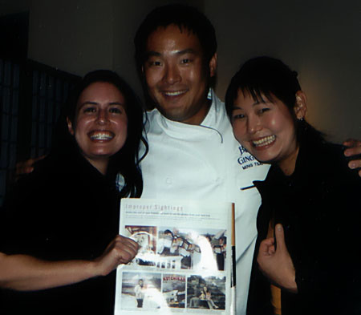

|
Home Us Pascale Graham Thornbush Family & Friends SeaMaster Wedding France 2001 Lockie's Art What's New |
The Obsession with Ming Tsai A.K.A. The Ming Paradox I am not usually starstruck. Encountering a movie star personality does not interest me. Mel Gibson, for instance, just your average Joe. he does nothing for me. There are 2 exceptions to this rule. celebrity authors and celebrity chefs. Meeting Kurt Vonnegut or Paul Auster would make me weak in the knees. Similarly, meeting Emeril Lagasse or other chefs gives me serious goosebumps. The normal reaction that one would expect when meeting Mel Gibson occurs, and I am reduced to a blithering, blushing, girl.  Fortunately I am not alone. At least in the Case of Ming Tsai, local celebrity chef. His hot East West fusion restuarant, Blue Ginger, is located in Wellesley, and he is often found presiding over it's kitchen. donnadonnadonna is a hug fan of his. Like borderline stalking-type fan. So she offered up the suggestion that for my bachelorette weekend we spend it in Boston, pampering ourselves at my favorite spa, Bella Sante, shopping Newbury street for new summer clothes (I had serious tank top envy-(TTE)- when I saw Donna purchase the perfect tank at Banana Republic, so we bought one in almost every color.), and having pre dinner girl-drinks. When we arrived at Blue Ginger we saw Ming almost right away! (you know those old video clips of screaming American girls in poodle shirts fainting at the sight of the Beatles-well place the girls in newly acquired Banner Republic tank tops instead of poodle skirts and you get the idea). We were shown to our table in the back (clever move on the part of the hostess) where we would disturb less dining patrons. Some folks looked at us odd. (Perhaps they had Tank Top envy-TTE) The meal was amazing. donnadonnadonna had the signature dish of Sea Bass. We bought cookbooks for Ming to sign and enjoyed our meal with constant furtive glances at the kitchen followed by peels of nervous laughter. donnadonnadonna asked if we could have Ming visit the table to sign our cookbooks and the waiter said he would see what he could work out. When Ming arrived we were so focused on our meals we practically jumped out of our seats at the sight of him. We had the camera at the ready, and forced a neighboring diner to take several shots of us with Ming. We told them we were going to post them on our web site. (hotchicks.com) ha ha. He signed our cookbooks with his signature "Peace and Good Eating". We then told him the whole story of the upcoming wedding etc. while he looked anxious to return to his work. We were very surprised at how long he patiently stayed at our table, listening to our ramblings until he said "I uh, I need my hand back to go back to the kitchen". It was at this point that we noticed donna's vice-like grip on the chef's hand. oops. Back to our meal, which we could barely finish as we were very excited, donna thought of how jealous her mother would be of the cookbook and bought another one. Again we asked the waiter to have Ming visit our table. He looked at us funny (probably not TTE this time), but put in the request to Ming. Miraculously Ming appeared with the line "Starting a library ladies?" He graciously signed the book, and this time donna kept her grip to herself. We related this story to our husband/ fiancée and for some reason they were not half as excited as we were. go figure? The paradox lies in the fact that Ming Tsai creates amazing food, yet we were too preoccupied to eat it. |
© TaterCo: We've got eyes for your business